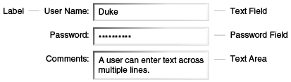
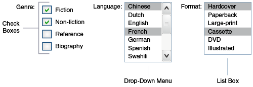

<h:inputText id="quantity"
size="4"
value="#{item.quantity}"
title="#{bundle.ItemQuantity}">
<f:validateLongRange minimum="0"/>
...
</h:inputText>
Agregando Componentes a Una Página Usando la Librería de Etiquetas de Etiquetas HTML
Las etiquetas definidas por la biblioteca de etiquetas HTML estándar de JavaServer Faces representan componentes de formulario HTML y otros elementos HTML básicos. Estos componentes muestran datos o aceptan datos del usuario. Estos datos se recopilan como parte de un formulario y se envían al servidor, generalmente cuando el usuario hace clic en un botón. Esta sección explica cómo utilizar cada una de las etiquetas de componentes que se muestran en la Tabla 10-1 .
Tabla 10-1 Etiquetas de componentes
|
Etiqueta |
Funciones |
Representada Como |
Apariencia |
|
|
Representa una columna de datos en un componente de datos. |
Una columna de datos en una tabla HTML |
Una columna en una tabla |
|
|
Envía un formulario a la aplicación |
Un elemento HTML |
Un botón |
|
|
Vínculos a otra página o ubicación en una página |
Un elemento HTML |
Un enlace |
|
|
Representa un contenedor de datos |
Un elemento HTML |
Una tabla que se puede actualizar dinámicamente |
|
|
Representa un formulario de entrada (las etiquetas internas del formulario reciben los datos que se enviarán con el formulario) |
Un elemento HTML |
Sin apariencia |
|
|
Muestra una imagen |
Un elemento HTML |
Una imagen |
|
|
Permite a un usuario subir un archivo. |
Un elemento HTML |
Un campo con un botón Browse… |
|
|
Permite al autor de una página incluir una variable oculta en una página. |
Un elemento HTML |
Sin apariencia |
|
|
Permite a un usuario ingresar una cadena sin que la cadena real aparezca en el campo. |
Un elemento HTML |
Un campo que muestra una fila de caracteres en lugar de la cadena real ingresada |
|
|
Permite a un usuario ingresar una cadena. |
Un elemento HTML |
Un campo |
|
|
Permite a un usuario ingresar una cadena multilínea. |
Un elemento HTML |
Un campo de varias filas |
|
|
Muestra un mensaje localizado |
Una etiqueta HTML |
Una cadena de texto |
|
|
Muestra mensajes localizados |
Un conjunto de etiquetas HTML |
Una cadena de texto |
|
|
Muestra un mensaje formateado |
Texto sin formato |
Texto sin formato |
|
|
Muestra un componente anidado como una etiqueta para un campo de entrada especificado. |
Un elemento HTML |
Texto sin formato |
|
|
Vínculos a otra página o ubicación en una página sin generar un evento de acción |
Un elemento HTML |
Un enlace |
|
|
Muestra una línea de texto. |
Texto sin formato |
Texto sin formato |
|
|
Muestra una tabla |
Un elemento HTML |
Una tabla |
|
|
Agrupa un conjunto de componentes bajo un padre |
Un elemento HTML |
Una fila en una tabla |
|
|
Permite a un usuario cambiar el valor de una opción booleana. |
Un elemento HTML |
Una casilla de verificación |
|
|
Muestra un conjunto de casillas de verificación entre las que el usuario puede seleccionar varios valores. |
Un conjunto de elementos HTML |
Un grupo de casillas de verificación |
|
|
Permite a un usuario seleccionar varios elementos de un conjunto de elementos que se muestran todos a la vez |
Un elemento HTML |
Una caja |
|
|
Permite a un usuario seleccionar varios elementos de un conjunto de elementos |
Un elemento HTML |
Un menú |
|
|
Permite a un usuario seleccionar un elemento de un conjunto de elementos que se muestran todos a la vez |
Un elemento HTML |
Una caja |
|
|
Permite a un usuario seleccionar un elemento de un conjunto de elementos. |
Un elemento HTML |
Un menú |
|
|
Permite a un usuario seleccionar un elemento de un conjunto de elementos. |
Un elemento HTML |
Un grupo de opciones
Para un botón de opción independiente, use el atributo |
Las etiquetas corresponden a los componentes del paquete javax.faces.component. Los
componentes se describen con más detalle en
Capítulo 12, "Desarrollo con la tecnología JavaServer Faces".
La siguiente sección explica los atributos importantes que son comunes a la mayoría de las etiquetas de componentes. Para cada uno de los componentes discutidos en las siguientes secciones, Escribir propiedades de bean explica cómo escribir una propiedad de bean vinculada a ese componente en particular o su valor.
<
Para obtener información de referencia sobre las etiquetas y sus atributos, consulte la documentación de la biblioteca de etiquetas JavaServer Faces Facelets.
Atributos de Etiquetas de Componentes Comunes
La mayoría de las etiquetas de componentes admiten los atributos que se muestran en la Tabla 10-2.
Tabla 10-2 Atributos de etiquetas de componentes comunes
|
Atributo |
Descripción |
|
|
Identifica una propiedad de bean y le une la instancia del componente. |
|
|
Identifica de forma exclusiva el componente. |
|
|
Si se establece en |
|
|
Especifica una condición bajo la cual se debe renderizar el componente. Si no se cumple la condición, el componente no se procesa. |
|
|
Especifica un estilo de hoja de estilo en cascada (CSS) para la etiqueta. |
|
|
Especifica una clase CSS que contiene definiciones de los estilos. |
|
|
Especifica el valor del componente en forma de expresión de valor. |
Todos los atributos de etiqueta excepto id pueden aceptar expresiones, tal como
las define EL, descritas en Lenguaje de Expresión (EL).
Un atributo como rendered o value puede establecerse en la página y
luego modificarse en el bean de respaldo de la página.
El Atributo id
El atributo id no suele ser necesario para una etiqueta de componente, pero se
utiliza cuando otro componente o una clase del lado del servidor debe hacer referencia al
componente. Si no incluye un atributo id, la implementación de JavaServer Faces
genera automáticamente un ID de componente. A diferencia de la mayoría de los demás atributos
de etiqueta de JavaServer Faces, el atributo id toma expresiones utilizando solo
la sintaxis de evaluación descrita en Evaluación inmediata,
que utiliza los delimitadores ${}. Para obtener más información sobre la sintaxis
de expresiones, consulte Expresiones de valor.
El Atributo immediate
Los componentes de entrada y los componentes de comando (aquellos que implementan la interfaz
ActionSource, como botones y enlaces) pueden establecer el atributo
immediate en true para forzar eventos , validaciones y conversiones
que se procesarán cuando se apliquen los valores de los parámetros de solicitud.
Debe considerar cuidadosamente cómo la combinación del valor immediate de un
componente de entrada y el valor immediate de un componente de comando determina
lo que sucede cuando se activa el componente de comando.
Suponga que tiene una página con un botón y un campo para ingresar la cantidad de un libro en
un carrito de compras. Si los atributos immediate tanto del botón como del campo
se establecen en true, el nuevo valor ingresado en el campo estará disponible
para cualquier procesamiento asociado con el evento que se genera cuando se hace clic en el
botón. El evento asociado con el botón, así como los eventos, la validación y la conversión
asociados con el campo se manejan cuando se aplican los valores de los parámetros de solicitud.
Si el atributo immediate del botón se establece en true pero el
atributo immediate del campo se establece en false, el evento
asociado con el botón se procesa sin actualizar el valor local del campo a la capa del modelo.
La razón es que cualquier evento, conversión y validación asociados con el campo ocurren
después de que se aplican los valores de los parámetros de solicitud.
La página bookshowcart.xhtml del caso de estudio de la librería Duke's Bookstore
tiene ejemplos de componentes que utilizan el atributo immediate para controlar
qué datos de componentes se actualizan cuando se hace clic en ciertos botones. El campo
quantity de cada libro no establece el atributo immediate, por lo
que el valor es false (el valor predeterminado).
El atributo immediate del hipervínculo 'Continuar Comprando' se establece en
true, mientras que el atributo immediate del hipervínculo
'Actualizar Cantidades' se establece en false:
<h:commandLink id="continue"
action="bookcatalog"
immediate="true">
<h:outputText value="#{bundle.ContinueShopping}"/>
</h:commandLink>
...
<h:commandLink id="update"
action="#{showcart.update}"
immediate="false">
<h:outputText value="#{bundle.UpdateQuantities}"/>
</h:commandLink>
Si hace clic en el hipervínculo 'Continuar comprando', no se procesará ninguno de los cambios
ingresados en los campos de entrada quantity. Si hace clic en el hipervínculo
'Actualizar cantidades', los valores de los campos quantity se actualizarán en el
carrito de compras.
El Atributo rendered
Una etiqueta de componente utiliza una expresión EL booleana junto con el atributo
rendered para determinar si el componente se renderizará. Por ejemplo, el
componente commandLink en la siguiente sección de una página no se representa si
el carrito no contiene artículos:
<h:commandLink id="check"
...
rendered="#{cart.numberOfItems > 0}">
<h:outputText
value="#{bundle.CartCheck}"/>
</h:commandLink>
A diferencia de casi todos los demás atributos de etiqueta de JavaServer Faces, el atributo
rendered está restringido al uso de expresiones rvalue. Como se explica en
Expresiones de valor y método, estas expresiones rvalue
solo pueden leer datos; no pueden volver a escribir los datos en la fuente de datos. Por lo
tanto, las expresiones usadas con atributos rendered pueden usar los operadores
aritméticos y literales que las expresiones rvalue pueden usar pero las expresiones lvalue no
pueden usar. Por ejemplo, la expresión del ejemplo anterior utiliza el operador
>.
|
Nota:
En este ejemplo y en otros, |
Los Atributos style y styleClass
Los atributos style y styleClass le permiten especificar estilos CSS
para la salida renderizada de sus etiquetas.
Visualización de mensajes de error con las etiquetas h:message y h:messages
describe un ejemplo del uso del atributo style para especificar estilos
directamente en el atributo. En cambio, una etiqueta de componente puede hacer referencia a
una clase CSS.
El siguiente ejemplo muestra el uso de una etiqueta dataTable que hace referencia
a la clase de estilo list-background:
<h:dataTable id="items"
...
styleClass="list-background"
value="#{cart.items}"
var="book">
La hoja de estilo que define esta clase es stylesheet.css, que se incluirá en la
aplicación. Para obtener más información sobre cómo definir estilos, consulte las
especificaciones y los borradores de las hojas de estilo en cascada en
http://www.w3.org/Style/CSS/
.
Los Atributos value y binding
Una etiqueta que representa un componente de salida utiliza los atributos value y
binding para vincular el valor o instancia de su componente, respectivamente, a
un objeto de datos. El atributo value se usa con más frecuencia que el atributo
binding, y aparecen ejemplos a lo largo de este capítulo. Para obtener más
información sobre estos atributos, consulte
Creación de un bean administrado,
Escritura de propiedades vinculadas al componente Valores
y
Propiedades de escritura vinculadas a instancias de componentes
.
Agregando las Etiquetas de HTML Head y Body
Las etiquetas HTML head (h:head) y body (h:body) agregan estructura de
página HTML a las páginas web de JavaServer Faces.
-
La etiqueta
h:headrepresenta el elemento de cabecera de una página HTML. -
La etiqueta
h:bodyrepresenta el elemento del cuerpo de una página HTML.
El siguiente es un ejemplo de una página XHTML que utiliza las etiquetas de marcado de cuerpo y cabecera habituales:
<!DOCTYPE html PUBLIC "-//W3C//DTD XHTML 1.0 Transitional//EN"
"http://www.w3.org/TR/xhtml1/DTD/xhtml1-transitional.dtd">
<html xmlns="http://www.w3.org/1999/xhtml">
<head>
<title>Add a title</title>
</head>
<body>
Add Content
</body>
</html>
El siguiente es un ejemplo de una página XHTML que usa las etiquetas h:head y
h:body:
<!DOCTYPE html PUBLIC "-//W3C//DTD XHTML 1.0 Transitional//EN"
"http://www.w3.org/TR/xhtml1/DTD/xhtml1-transitional.dtd">
<html xmlns="http://www.w3.org/1999/xhtml"
xmlns:h="http://xmlns.jcp.org/jsf/html">
<h:head>
Add a title
</h:head>
<h:body>
Add Content
</h:body>
</html>
Los dos segmentos de código de ejemplo anteriores representan los mismos elementos HTML. Las etiquetas de cabecera y cuerpo son útiles principalmente para la reubicación de recursos. Para obtener más información sobre la reubicación de recursos, consulte Reubicación de recursos mediante etiquetas h:outputScript y h:outputStylesheet.
Agregando un Componente Form
Una etiqueta h:form representa un formulario de entrada, que incluye componentes
secundarios que pueden contener datos que se presentan al usuario o se envían con el formulario.
La Figura 10-1 muestra un formulario de inicio de sesión típico en el que un usuario ingresa un nombre de usuario y una contraseña, luego envía el formulario haciendo clic en el botón Iniciar sesión.
Figura 10-1 Un formulario típico

La etiqueta h:form representa el formulario en la página y encierra todos los
componentes que muestran o recopilan datos del usuario, como se muestra aquí:
<h:form>
... other JavaServer Faces tags and other content...
</h:form>
La etiqueta h:form también puede incluir marcado HTML para diseñar los componentes
de la página. Tenga en cuenta que la etiqueta h:form en sí misma no realiza ningún
diseño; su propósito es recopilar datos y declarar atributos que pueden ser utilizados por otros
componentes del formulario.
Una página puede incluir varias etiquetas h:form, pero solo los valores del
formulario enviado por el usuario se incluirán en la solicitud de devolución.
Usando Componentes de Texto
Los componentes de texto permiten a los usuarios ver y editar texto en aplicaciones web. Los tipos básicos de componentes de texto son los siguientes:
-
Etiqueta, que muestra texto de solo lectura
-
Campo, que permite a los usuarios ingresar texto (en una o más líneas), a menudo para ser enviado como parte de un formulario.
-
Campo de contraseña, que es un tipo de campo que muestra un conjunto de caracteres, como asteriscos, en lugar del texto de contraseña que ingresa el usuario.
Figura 10-2 muestra ejemplos de estos componentes de texto.
Figura 10-2 Componentes de texto de ejemplo

Los componentes de texto se pueden clasificar como entrada o salida. Un componente de salida de JavaServer Faces, como una etiqueta, se representa como texto de solo lectura. Un componente de entrada de JavaServer Faces, como un campo, se representa como texto editable.
Los componentes de entrada y salida se pueden representar de varias formas para mostrar texto más especializado.
La Tabla 10-3 enumera las etiquetas que representan los componentes de entrada.
Tabla 10-3 Etiquetas de entrada
|
Etiqueta |
Función |
|
|
Permite al autor de una página incluir una variable oculta en una página. |
|
|
El campo de contraseña estándar: acepta una línea de texto sin espacios y la muestra como un conjunto de asteriscos a medida que se ingresa |
|
|
El campo estándar: acepta una cadena de texto de una línea |
|
|
El campo estándar de varias líneas: acepta varias líneas de texto. |
Las etiquetas de entrada admiten los atributos de etiqueta que se muestran en la Tabla 10-4 además de los descritos en Atributos de etiqueta de componente común. Tenga en cuenta que esta tabla no incluye todos los atributos admitidos por las etiquetas de entrada, sino solo los que se utilizan con más frecuencia. Para obtener la lista completa de atributos, consulte la documentación de la biblioteca de etiquetas JavaServer Faces Facelets.
Tabla 10-4 Atributos de etiquetas de entrada
|
Atributo |
Descripción |
|
|
Identifica un convertidor que se utilizará para convertir los datos locales del componente. Consulte Uso de convertidores estándar para obtener más información sobre cómo utilizar este atributo. |
|
|
Especifica un mensaje de error para mostrar cuando falla el convertidor registrado en el componente. |
|
|
Especifica la dirección del texto que muestra este componente. Los valores aceptables son
|
|
|
Especifica un nombre que se puede utilizar para identificar este componente en los mensajes de error. |
|
|
Especifica el código del idioma utilizado en el marcado renderizado, como |
|
|
Toma un valor |
|
|
Especifica un mensaje de error para mostrar cuando el usuario no ingresa un valor en el componente. |
|
|
Identifica una expresión de método que apunta a un método de bean administrado que realiza
la validación de los datos del componente. Consulte
Cómo hacer referencia a un método que realiza la validación
para ver un ejemplo del uso de la etiqueta |
|
|
Especifica un mensaje de error que se mostrará cuando el validador registrado en el componente no pueda validar el valor local del componente. |
|
|
Identifica una expresión de método que apunta a un método de bean administrado que maneja
el evento de ingresar un valor en este componente. Consulte
Referencia a un método que gestiona un evento de cambio de valor
para ver un ejemplo del uso de |
La Tabla 10-5 enumera las etiquetas que representan los componentes de salida.
Tabla 10-5 Etiquetas de salida
|
Etiqueta |
Función |
|
|
Muestra un mensaje formateado |
|
|
La etiqueta estándar de solo lectura: muestra un componente como una etiqueta para un campo de entrada especificado |
|
|
Muestra una etiqueta |
|
|
Muestra una cadena de texto de una línea. |
Las etiquetas de salida admiten el atributo de etiqueta converter además de los que
se enumeran en Atributos de etiqueta de componente común.
El resto de esta sección explica cómo utilizar algunas de las etiquetas enumeradas en la Tabla 10-3 y Etiquetas de salida. Las otras etiquetas están escritas de forma similar.
Representando un Campo con la Etiqueta h:inputText
La etiqueta h:inputText se utiliza para mostrar un campo. Una etiqueta similar,
la etiqueta h:outputText, muestra una cadena de una sola línea de solo lectura.
Esta sección le muestra cómo usar la etiqueta h:inputText. La etiqueta
h:outputText está escrita de forma similar.
Aquí tiene un ejemplo de una etiqueta h:inputText
<h:inputText id="name"
label="Customer Name"
size="30"
value="#{cashierBean.name}"
required="true"
requiredMessage="#{bundle.ReqCustomerName}">
<f:valueChangeListener
type="javaeetutorial.dukesbookstore.listeners.NameChanged" />
</h:inputText>
El atributo label especifica un nombre fácil de usar que se utilizará en los
parámetros de sustitución de los mensajes de error que se muestran para este componente.
El atributo value se refiere a la propiedad name de un bean
gestionado llamado CashierBean. Esta propiedad contiene los datos del componente
name. Después de que el usuario envía el formulario, el valor de la propiedad
name en CashierBean se establecerá en el texto ingresado en el campo
correspondiente a esta etiqueta.
El atributo required hace que la página se vuelva a cargar, mostrando errores, si
el usuario no ingresa un valor en el campo name. La implementación de JavaServer
Faces comprueba si el valor del componente es nulo o es una cadena vacía.
Si su componente debe tener un valor no nulo o un valor String de al menos un
carácter de longitud, debe agregar un atributo required a su etiqueta y
establecer su valor en true. Si su etiqueta tiene un atributo
required que se establece en true y el valor es nulo o una cadena de
longitud cero, no se llama a ningún otro validador registrado en la etiqueta. Si su etiqueta
no tiene un atributo required establecido en true, se llaman a otros
validadores que están registrados en la etiqueta, pero esos validadores deben manejar la
posibilidad de un valor nulo o cadena de longitud cero. Consulte
Validación de cadenas vacías y nulas para obtener
más información.
Representando un Campo de Clave con la Etiqueta h:inputSecret
La etiqueta h:inputSecret representa una etiqueta HTML
<input type="password">. Cuando el usuario escribe una cadena en este
campo, se muestra una fila de asteriscos en lugar del texto ingresado por el usuario. Aquí hay
un ejemplo:
<h:inputSecret redisplay="false"
value="#{loginBean.password}" />
En este ejemplo, el atributo redisplay se establece en false. Esto
evitará que la contraseña se muestre en una cadena de consulta o en el archivo fuente de la
página HTML resultante.
Representando una Etiqueta con la Etiqueta h:outputLabel
La etiqueta h:outputLabel se utiliza para adjuntar una etiqueta a un campo de
entrada especificado con el fin de hacerlo accesible. La siguiente página usa una etiqueta
h:outputLabel para representar la etiqueta de una casilla de verificación:
<h:selectBooleanCheckbox id="fanClub"
rendered="false"
binding="#{cashierBean.specialOffer}" />
<h:outputLabel for="fanClub"
rendered="false
binding="#{cashierBean.specialOfferText}">
<h:outputText id="fanClubLabel"
value="#{bundle.DukeFanClub}" />
</h:outputLabel>
...
La etiqueta h:selectBooleanCheckbox y la etiqueta h:outputLabel
tienen atributos rendered que se establecen en false en la página
pero se establecen en true en CashierBean en determinadas circunstancias. El
atributo for de la etiqueta h:outputLabel se asigna al
id del campo de entrada al que se adjunta la etiqueta. La etiqueta
h:outputText anidada dentro de la etiqueta h:outputLabel representa
el componente de la etiqueta. El atributo value en la etiqueta
h:outputText indica el texto que se muestra junto al campo de entrada.
En lugar de usar una etiqueta h:outputText para el texto que se muestra como una
etiqueta, simplemente puede usar el atributo value de la etiqueta
h:outputLabel. El siguiente fragmento de código muestra cómo se vería el
fragmento de código anterior si utilizara el atributo value de la etiqueta
h:outputLabel para especificar el texto de la etiqueta:
<h:selectBooleanCheckbox id="fanClub"
rendered="false"
binding="#{cashierBean.specialOffer}" />
<h:outputLabel for="fanClub"
rendered="false"
binding="#{cashierBean.specialOfferText}"
value="#{bundle.DukeFanClub}" />
</h:outputLabel>
...
Representando un Enlace con la Etiqueta h:outputLink
La etiqueta h:outputLink se usa para representar un enlace que, cuando se hace
clic, carga otra página pero no genera un evento de acción. Debe usar esta etiqueta en lugar
de la etiqueta h:commandLink si siempre desea que se abra la URL especificada por
el atributo value de la etiqueta h:outputLink y no desea que se
realice ningún procesamiento cuando el usuario haga clic en el enlace. Aquí hay un ejemplo:
<h:outputLink value="javadocs">
Documentation for this demo
</h:outputLink>
El texto en el cuerpo de la etiqueta h:outputLink identifica el texto en el que
el usuario hace clic para ir a la página siguiente.
Mostrando un Mensaje Formateado con la Etiqueta h:outputFormat
La etiqueta h:outputFormat permite la visualización de mensajes concatenados como
un patrón MessageFormat, como se describe en la documentación de la IPA para
java.text.MessageFormat. A continuación, se muestra un ejemplo de una etiqueta
h:outputFormat:
<h:outputFormat value="Hello, {0}!">
<f:param value="#{hello.name}"/>
</h:outputFormat>
El atributo value especifica el patrón MessageFormat. La etiqueta
f:param especifica los parámetros de sustitución del mensaje. El valor del
parámetro reemplaza el {0} en la oración. Si el valor de
"# {hello.name}" es "Bill", el mensaje que se muestra en la página es el
siguiente:
Hello, Bill!
Una etiqueta h:outputFormat puede incluir más de una etiqueta
f:param para aquellos mensajes que tienen más de un parámetro que debe
concatenarse en el mensaje. Si tiene más de un parámetro para un mensaje, asegúrese de colocar
las etiquetas f:param en el orden correcto para que los datos se inserten en el
lugar correcto en el mensaje. Aquí está el ejemplo anterior modificado con un parámetro
adicional:
<h:outputFormat value="Hello, {0}! You are visitor number {1} to the page.">
<f:param value="#{hello.name}" />
<f:param value="#{bean.numVisitor}"/>
</h:outputFormat>
El valor de {1} se reemplaza por el segundo parámetro. El parámetro es una
expresión EL, bean.numVisitor, en la que la propiedad numVisitor del
bean administrado bean realiza un seguimiento de los visitantes de la página. Este
es un ejemplo de un atributo de etiqueta habilitado para expresión de valor que acepta una
expresión EL. El mensaje que se muestra en la página ahora es el siguiente:
Hello, Bill! You are visitor number 10 to the page.
Usando Etiquetas del Componente Command para Realizar Acciones y Navegación
En las aplicaciones JavaServer Faces, el botón y las etiquetas del componente de enlace se utilizan para realizar acciones, como enviar un formulario y navegar a otra página. Estas etiquetas se denominan etiquetas de componente de comando porque realizan una acción cuando se activan.
La etiqueta h:commandButton se representa como un botón. La etiqueta
h:commandLink se representa como un enlace.
Además de los atributos de etiqueta enumerados en
Atributos de etiqueta de componente común, las etiquetas
h:commandButton y h:commandLink pueden utilice los siguientes
atributos.
-
action, que es un resultado lógicoStringo una expresión de método que apunta a un método bean que devuelve un resultado lógicoString. En cualquier caso, el resultado lógicoStringse utiliza para determinar a qué página acceder cuando se activa la etiqueta del componente de comando. -
actionListener, que es una expresión de método que apunta a un método bean que procesa un evento de acción disparado por la etiqueta del componente de comando.
Consulte
Cómo hacer referencia a un método que realiza la navegación
para obtener más información sobre el uso del atributo action. Consulte
Cómo hacer referencia a un método que gestiona un evento de acción
para obtener detalles sobre el uso del atributo actionListener.
Representando un Botón con la Etiqueta h:commandButton
Si está utilizando una etiqueta de componente h:commandButton, los datos de la
página actual se procesan cuando un usuario hace clic en el botón y se abre la página
siguiente. Aquí hay un ejemplo de la etiqueta h:commandButton:
<h:commandButton value="Submit"
action="#{cashierBean.submit}"/>
Al hacer clic en el botón, se invocará el método submit de
CashierBean porque el atributo action hace referencia a este método.
El método submit realiza algún procesamiento y devuelve un resultado lógico.
El atributo value del ejemplo de etiqueta h:commandButton hace
referencia a la etiqueta del botón. Para obtener información sobre cómo utilizar el atributo
action, consulte
Hacer referencia a un método que realiza la navegación.
Representando un Enlace con la Etiqueta h:commandLink
La etiqueta h:commandLink representa un enlace HTML y se representa como un
elemento HTML <a>.
Una etiqueta h:commandLink debe incluir una etiqueta h:outputText
anidada, que representa el texto en el que el usuario hace clic para generar el evento. Aquí
hay un ejemplo:
<h:commandLink id="Duke" action="bookstore">
<f:actionListener
type="javaeetutorial.dukesbookstore.listeners.LinkBookChangeListener" />
<h:outputText value="#{bundle.Book201}"/>
/h:commandLink>
Esta etiqueta renderizará HTML que se parece a lo siguiente:
<a id="_idt16:Duke" href="#"
onclick="mojarra.jsfcljs(do cument.getElementById('j_idt16'),
{'j_idt16:Duke':'j_idt16:Duke'},'');
return false;">My Early Years: Growing Up on Star7, by Duke</a>
|
Nota:
La etiqueta |
Agregando Gráficos e Imágenes con la Etiqueta h:graphicImage
En una aplicación JavaServer Faces, use la etiqueta h:graphicImage para representar
una imagen en una página:
<h:graphicImage id="mapImage" url="/resources/images/book_all.jpg"/>
En este ejemplo, el atributo url especifica la ruta a la imagen. La URL de la
etiqueta de ejemplo comienza con una barra (/), que agrega la ruta de contexto
relativa de la aplicación web al comienzo de la ruta de la imagen.
Alternativamente, puede utilizar la función descrita en Recursos Web para señalar la ubicación de la imagen. A continuación, se muestran dos ejemplos:
<h:graphicImage id="mapImage"
name="book_all.jpg"
library="images"
alt="#{bundle.ChooseBook}"
usemap="#bookMap" />
<h:graphicImage value="#{resource['images:wave.med.gif']}"/>
Puede utilizar una sintaxis similar para hacer referencia a una imagen en una hoja de estilo.
La siguiente sintaxis en una hoja de estilo especifica que la imagen se encuentra en
resources/img/top-background.jpg:
header {
position: relative;
height: 150px;
background: #fff url(#{resource['img:top-background.jpg']}) repeat-x;
...
Disposición de Componentes con las Etiquetas h:panelGrid y h:panelGroup
En una aplicación JavaServer Faces, utiliza un panel como contenedor de diseño para un conjunto de otros componentes. Un panel se representa como una tabla HTML. La Tabla 10-6 enumera las etiquetas utilizadas para crear paneles.
Tabla 10-6 Etiquetas de componentes del panel
|
Etiquetas |
Atributos |
Función |
|
|
|
Muestra una tabla |
|
|
|
Agrupa un conjunto de componentes bajo un padre |
La etiqueta h:panelGrid se usa para representar una tabla completa. La etiqueta
h:panelGroup se usa para representar filas en una tabla. Se utilizan otras
etiquetas para representar celdas individuales en las filas.
El atributo columns define cómo agrupar los datos en la tabla y, por lo tanto, es
obligatorio si desea que su tabla tenga más de una columna. La etiqueta h:panelGrid
también tiene un conjunto de atributos opcionales que especifican clases CSS:
columnClasses, footerClass, headerClass ,
panelClass y rowClasses. El atributo role puede tener el
valor "presentation" para indicar que el propósito de la tabla es dar formato a la
pantalla en lugar de mostrar datos.
Si se especifica el valor del atributo headerClass, la etiqueta
h:panelGrid debe tener un encabezado como su primer hijo. De manera similar, si se
especifica un valor de atributo footerClass, la etiqueta h:panelGrid
debe tener un pie de página como último elemento secundario.
Aquí hay un ejemplo:
<h:panelGrid columns="2"
headerClass="list-header"
styleClass="list-background"
rowClasses="list-row-even, list-row-odd"
summary="#{bundle.CustomerInfo}"
title="#{bundle.Checkout}"
role="presentation">
<f:facet name="header">
<h:outputText value="#{bundle.Checkout}"/>
</f:facet>
<h:outputLabel for="name" value="#{bundle.Name}" />
<h:inputText id="name" size="30"
value="#{cashierBean.name}"
required="true"
requiredMessage="#{bundle.ReqCustomerName}">
<f:valueChangeListener
type="javaeetutorial.dukesbookstore.listeners.NameChanged" />
</h:inputText>
<h:message styleClass="error-message" for="name"/>
<h:outputLabel for="ccno" value="#{bundle.CCNumber}"/>
<h:inputText id="ccno"
size="19"
converterMessage="#{bundle.CreditMessage}"
required="true"
requiredMessage="#{bundle.ReqCreditCard}">
<f:converter converterId="ccno"/>
<f:validateRegex
pattern="\d{16}|\d{4} \d{4} \d{4} \d{4}|\d{4}-\d{4}-\d{4}-\d{4}" />
</h:inputText>
<h:message styleClass="error-message" for="ccno"/>
...
</h:panelGrid>
La etiqueta h:panelGrid anterior se representa como una tabla que contiene
componentes en los que un cliente ingresa información personal. Esta etiqueta
h:panelGrid usa clases de hojas de estilo para formatear la tabla. El siguiente
código muestra la definición de list-header:
.list-header {
background-color: #ffffff;
color: #000000;
text-align: center;
}
Debido a que la etiqueta h:panelGrid especifica un headerClass, la
etiqueta h:panelGrid debe contener un encabezado. La etiqueta
h:panelGrid de ejemplo utiliza una etiqueta f:facet para el
encabezado. Las facetas solo pueden tener un hijo, por lo que se necesita una etiqueta
h:panelGroup si desea agrupar más de un componente dentro de una
f:facet. La etiqueta h:panelGrid de ejemplo tiene solo una celda de
datos, por lo que no se necesita una etiqueta h:panelGroup. (Para obtener más
información sobre las facetas, consulte
Uso de componentes de tablas enlazadas a datos).
La etiqueta h:panelGroup tiene un atributo, layout, además de los
enumerados en Atributos de etiquetas de componentes comunes. Si el atributo
layout tiene el valor block, se representa un elemento HTML
div para encerrar la fila; de lo contrario, se representa un elemento HTML
span para encerrar la fila. Si está especificando estilos para la etiqueta
h:panelGroup, debe establecer el atributo layout en block
para que los estilos se apliquen a los componentes dentro de la etiqueta
h:panelGroup. Debe hacer esto porque los estilos, como los que establecen el ancho
y el alto, no se aplican a los elementos en línea, que es la forma en que se define el contenido
delimitado por el elemento span.
También se puede usar una etiqueta h:panelGroup para encapsular un árbol de
componentes anidado de modo que el árbol de componentes aparezca como un solo componente para el
componente principal.
Los datos, representados por las etiquetas anidadas, se agrupan en filas según el valor del
atributo columns de la etiqueta h:panelGrid. El atributo
columns en el ejemplo se establece en 2 y, por lo tanto, la tabla
tendrá dos columnas. La columna en la que se muestra cada componente está determinada por el
orden en que el componente aparece en la página módulo 2. Por lo tanto, si un componente es el
quinto en la lista de componentes, ese componente estará en la columna 5 módulo 2, o columna 1.
Visualización de Componentes para Seleccionar un Valor
Otro componente de uso común es el que permite al usuario seleccionar un valor, ya sea el único valor disponible o uno de un conjunto de opciones. Las etiquetas más comunes para este tipo de componente son las siguientes:
-
Una etiqueta
h:selectBooleanCheckbox, se muestra como una casilla de verificación, que representa un estado booleano -
Una etiqueta
h:selectOneRadio, se muestra como un conjunto de opciones -
Una etiqueta
h:selectOneMenu, se muestra como una lista desplazable -
Una etiqueta
h:selectOneListbox, se muestra como una lista que no se puede desplazar
La Figura 10-3 muestra ejemplos de estos componentes.
Figura 10-3 Componentes de ejemplo para seleccionar un artículo

Visualizando una Casilla de Verificación Usando la Etiqueta h:selectBooleanCheckbox
La etiqueta h:selectBooleanCheckbox es la única etiqueta que proporciona la
tecnología JavaServer Faces para representar un estado booleano.
A continuación, se muestra un ejemplo que muestra cómo utilizar la etiqueta
h:selectBooleanCheckbox:
<h:selectBooleanCheckbox id="fanClub"
rendered="false"
binding="#{cashierBean.specialOffer}" />
<h:outputLabel for="fanClub"
rendered="false"
binding="#{cashierBean.specialOfferText}"
value="#{bundle.DukeFanClub}" />
La etiqueta h:selectBooleanCheckbox y la etiqueta h:outputLabel
tienen atributos rendered que se establecen en false en la página
pero se establecen en true en CashierBean en determinadas circunstancias. Cuando
se procesa la etiqueta h:selectBooleanCheckbox, muestra una casilla de
verificación para permitir a los usuarios indicar si desean unirse al Club de fans de Duke.
Cuando se representa la etiqueta h:outputLabel, muestra la etiqueta de la casilla
de verificación. El texto de la etiqueta está representado por el atributo value.
Visualizando un Menú Usando la Etiqueta h:selectOneMenu
Un componente que permite al usuario seleccionar un valor de un conjunto de valores se puede
representar como un cuadro o un conjunto de opciones. Esta sección describe la etiqueta
h:selectOneMenu. Las etiquetas h:selectOneRadio y
h:selectOneListbox se utilizan de forma similar. La etiqueta
h:selectOneListbox es similar a la etiqueta h:selectOneMenu
excepto que h:selectOneListbox define un atributo size que determina
cuántos de los elementos se muestran a la vez.
La etiqueta h:selectOneMenu representa un componente que contiene una lista de
elementos de los que un usuario puede seleccionar un elemento. Este componente del menú a
veces se conoce como lista desplegable o cuadro combinado. El siguiente fragmento de código
muestra cómo se usa la etiqueta h:selectOneMenu para permitir al usuario
seleccionar un método de envío:
<h:selectOneMenu id="shippingOption"
required="true"
value="#{cashierBean.shippingOption}">
<f:selectItem itemValue="2"
itemLabel="#{bundle.QuickShip}"/>
<f:selectItem itemValue="5"
itemLabel="#{bundle.NormalShip}"/>
<f:selectItem itemValue="7"
itemLabel="#{bundle.SaverShip}"/>
</h:selectOneMenu>
El atributo value de la etiqueta h:selectOneMenu se asigna a la
propiedad que contiene el valor del elemento seleccionado actualmente. En este caso, el valor
lo establece el bean de respaldo. No es necesario que proporcione un valor para el elemento
seleccionado actualmente. Si no proporciona un valor, el navegador determina cuál está
seleccionado.
Al igual que la etiqueta h:selectOneRadio, la etiqueta
h:selectOneMenu debe contener una etiqueta f:selectItems o un
conjunto de etiquetas f:selectItem para representar los elementos de la lista.
El uso de las etiquetas f:selectItem y f:selectItems describe estas
etiquetas.
Visualización de Componentes para Seleccionar Múltiples Valores
En algunos casos, debe permitir que sus usuarios seleccionen varios valores en lugar de solo un valor de una lista de opciones. Puede hacer esto usando una de las siguientes etiquetas de componentes:
-
Una etiqueta
h:selectManyCheckbox, se muestra como un conjunto de casillas de verificación -
Una etiqueta
h:selectManyMenu, mostrada como un menú -
Una etiqueta
h:selectManyListbox, mostrado como una caja
La figura 10-4 muestra ejemplos de estos componentes.
Figura 10-4 Componentes de ejemplo para seleccionar varios valores

Estas etiquetas permiten al usuario seleccionar cero o más valores de un conjunto de valores.
Esta sección explica la etiqueta h:selectManyCheckbox. Las etiquetas
h:selectManyListbox y h:selectManyMenu se utilizan de forma similar.
A diferencia de un menú, una lista muestra un subconjunto de elementos en un cuadro; un menú
muestra solo un elemento a la vez cuando el usuario no está seleccionando el menú. El atributo
size de la etiqueta h:selectManyListbox determina la cantidad de
elementos que se muestran a la vez. El cuadro incluye una barra de desplazamiento para
desplazarse por los elementos restantes de la lista.
La etiqueta h:selectManyCheckbox representa un grupo de casillas de verificación, y
cada casilla de verificación representa un valor que se puede seleccionar:
<h:selectManyCheckbox id="newslettercheckbox"
layout="pageDirection"
value="#{cashierBean.newsletters}">
<f:selectItems value="#{cashierBean.newsletterItems}"/>
</h:selectManyCheckbox>
El atributo value de la etiqueta h:selectManyCheckbox identifica la
propiedad newsletters del bean gestionado CashierBean. Esta propiedad
contiene los valores de los elementos seleccionados actualmente del conjunto de casillas de
verificación. No es necesario que proporcione un valor para los elementos seleccionados
actualmente. Si no proporciona un valor, el primer elemento de la lista se selecciona de forma
predeterminada. En el bean gestionado CashierBean, este valor se instancia a 0, por
lo que no se selecciona ningún elemento de forma predeterminada.
El atributo layout indica cómo se organiza el conjunto de casillas de verificación
en la página. Debido a que el diseño se establece en pageDirection, las casillas de
verificación se organizan verticalmente. El valor predeterminado es lineDirection,
que alinea las casillas de verificación horizontalmente.
La etiqueta h:selectManyCheckbox también debe contener una etiqueta o un conjunto
de etiquetas que representen el conjunto de casillas de verificación. Para representar un
conjunto de elementos, utilice la etiqueta f:selectItems. Para representar cada
elemento individualmente, utilice la etiqueta f:selectItem. La siguiente sección
explica estas etiquetas con más detalle.
Usando las Etiquetas f:selectItem y f:selectItems
Las etiquetas f:selectItem y f:selectItems representan componentes
que se pueden anidar dentro de un componente que le permite seleccionar uno o varios elementos.
Una etiqueta f:selectItem contiene el valor, la etiqueta y la descripción de un
solo elemento. Una etiqueta f:selectItems contiene los valores, etiquetas y
descripciones de la lista completa de elementos.
Puede utilizar un conjunto de etiquetas f:selectItem o una sola etiqueta
f:selectItems dentro de la etiqueta de su componente.
Las ventajas de usar la etiqueta f:selectItems son las siguientes.
-
Los elementos se pueden representar mediante el uso de diferentes estructuras de datos, incluidas
Array,MapyCollection. El valor de la etiquetaf:selectItemspuede representar incluso una colección genérica de POJO. -
Se pueden concatenar diferentes listas en un solo componente y las listas se pueden agrupar dentro del componente.
-
Los valores se pueden generar dinámicamente en tiempo de ejecución.
Las ventajas de usar f:selectItem son las siguientes.
-
Los elementos de la lista se pueden definir desde la página.
-
Se necesita menos código en el bean de respaldo para las propiedades
f:selectItem.
El resto de esta sección le muestra cómo usar las etiquetas f:selectItems y
f:selectItem.
Usando la Etiqueta f:selectItems
El siguiente ejemplo de Visualización de componentes para seleccionar varios
valores muestra cómo utilizar la etiqueta h:selectManyCheckbox:
<h:selectManyCheckbox id="newslettercheckbox"
layout="pageDirection"
value="#{cashierBean.newsletters}">
<f:selectItems value="#{cashierBean.newsletterItems}"/>
</h:selectManyCheckbox>
El atributo value de la etiqueta f:selectItems está vinculado a la
propiedad del bean gestionado cashierBean.newsletterItems. Los objetos
SelectItem individuales se crean mediante programación en el bean gestionado.
Consulte Propiedades de UISelectItems para obtener información sobre cómo escribir una propiedad de bean gestionado para una de estas etiquetas.
Usando la Etiqueta f:selectItem
La etiqueta f:selectItem representa un solo elemento en una lista de elementos.
Aquí está el ejemplo de Visualización de un menú usando la etiqueta
h:selectOneMenu una vez más:
<h:selectOneMenu id="shippingOption"
required="true"
value="#{cashierBean.shippingOption}">
<f:selectItem itemValue="2"
itemLabel="#{bundle.QuickShip}"/>
<f:selectItem itemValue="5"
itemLabel="#{bundle.NormalShip}"/>
<f:selectItem itemValue="7"
itemLabel="#{bundle.SaverShip}"/>
</h:selectOneMenu>
El atributo itemValue representa el valor de la etiqueta
f:selectItem. El atributo itemLabel representa la
String que aparece en el componente de lista en la página.
Los atributos itemValue e itemLabel están habilitados para la
vinculación de valores, lo que significa que pueden usar expresiones de vinculación de valores
para hacer referencia a valores en objetos externos. Estos atributos también pueden definir
valores literales, como se muestra en el ejemplo de etiqueta h:selectOneMenu.
Visualizando los Resultados de los Componentes de Selección
Si muestra componentes que permiten a un usuario seleccionar valores, es posible que también desee mostrar el resultado de la selección.
Por ejemplo, es posible que desee agradecer a un usuario que seleccionó la casilla de
verificación para unirse al Club de fans de Duke, como se describe en
Visualización de una casilla de verificación con la etiqueta h:selectBooleanCheckbox
. Debido a que la casilla de verificación está vinculada a la propiedad
specialOffer de CashierBean, un valor de UISelectBoolean,
puede llamar al método isSelected de la propiedad para determinar si se debe
mostrar un mensaje de agradecimiento:
<h:outputText value="#{bundle.DukeFanClubThanks}"
rendered="#{cashierBean.specialOffer.isSelected()}"/>
De manera similar, es posible que desee reconocer que un usuario se suscribió a los boletines
mediante la etiqueta h:selectManyCheckbox, como se describe en
Visualización de componentes para seleccionar varios valores. Para hacerlo,
puede recuperar el valor de la propiedad newsletters, la matriz de
String que contiene los elementos seleccionados:
<h:outputText value="#{bundle.NewsletterThanks}"
rendered="#{!empty cashierBean.newsletters}"/>
<ul>
<ui:repeat value="#{cashierBean.newsletters}" var="nli">
<li><h:outputText value="#{nli}" /></li>
</ui:repeat>
</ul>
Se muestra un mensaje de agradecimiento introductorio solo si la matriz newsletters
no está vacía. Luego, una etiqueta ui:repeat, una forma sencilla de mostrar valores
en un bucle, muestra el contenido de los elementos seleccionados en una lista detallada. (Esta
etiqueta aparece en la Tabla 8-2).
Uso de Componentes de Tabla Enlazados a Datos
Los componentes de la tabla enlazada a datos muestran datos relacionales en formato tabular. En
una aplicación JavaServer Faces, la etiqueta del componente h:dataTable admite la
vinculación a una colección de objetos de datos y muestra los datos como una tabla HTML. La
etiqueta h:column representa una columna de datos dentro de la tabla, iterando
sobre cada registro en la fuente de datos, que se muestra como una fila. Aquí hay un ejemplo:
<h:dataTable id="items"
captionClass="list-caption
columnClasses="list-column-center, list-column-left,
list-column-right, list-column-center"
footerClass="list-footer"
headerClass="list-header"
rowClasses="list-row-even, list-row-odd"
styleClass="list-background"
summary="#{bundle.ShoppingCart}"
value="#{cart.items}"
border="1"
var="item">
<h:column>
<f:facet name="header">
<h:outputText value="#{bundle.ItemQuantity}" />
</f:facet>
<h:inputText id="quantity"
size="4"
value="#{item.quantity}"
title="#{bundle.ItemQuantity}">
<f:validateLongRange minimum="1"/>
<f:valueChangeListener
type="javaeetutorial.dukesbookstore.listeners.QuantityChanged"/>
</h:inputText>
</h:column>
<h:column>
<f:facet name="header">
<h:outputText value="#{bundle.ItemTitle}"/>
</f:facet>
<h:commandLink action="#{showcart.details}">
<h:outputText value="#{item.item.title}"/>
</h:commandLink>
</h:column>
...
<f:facet name="footer"
<h:panelGroup>
<h:outputText value="#{bundle.Subtotal}"/>
<h:outputText value="#{cart.total}" />
<f:convertNumber currencySymbol="$" type="currency" />
</h:outputText>
</h:panelGroup>
</f:facet>
<f:facet name="caption">
<h:outputText value="#{bundle.Caption}"/>
</f:facet>
</h:dataTable>
El ejemplo de etiqueta h:dataTable muestra los libros en el carrito de compras, así
como la cantidad de cada libro en el carrito de compras, los precios y un conjunto de botones en
los que el usuario puede hacer clic para eliminar libros del carrito de compras.
Las etiquetas h:column representan columnas de datos en un componente de datos.
Mientras el componente de datos está iterando sobre las filas de datos, procesa el componente de
columna asociado con cada etiqueta h:column para cada fila de la tabla.
La etiqueta h:dataTable que se muestra en el ejemplo de código anterior recorre en
iteración la lista de libros (cart.items) en el carrito de compras y muestra sus
títulos, autores y precios. Cada vez que la etiqueta h:dataTable recorre la lista
de libros, representa una celda en cada columna.
Las etiquetas h:dataTable y h:column utilizan facetas para representar
partes de la tabla que no se repiten ni actualizan. Estas partes incluyen encabezados, pies de
página y leyendas.
En el ejemplo anterior, las etiquetas h:column incluyen etiquetas
f:facet para representar encabezados o pies de columna. La etiqueta
h:column le permite controlar los estilos de estos encabezados y pies de página al
admitir los atributos headerClass y footerClass. Estos atributos
aceptan listas de clases CSS separadas por espacios, que se aplicarán a las celdas de encabezado
y pie de página de la columna correspondiente en la tabla renderizada.
Las facetas solo pueden tener un hijo, por lo que se necesita una etiqueta
h:panelGroup si desea agrupar más de un componente dentro de un
f:facet. Debido a que la etiqueta de faceta que representa el pie de página
incluye más de una etiqueta, la etiqueta h:panelGroup es necesaria para agrupar
esas etiquetas. Finalmente, esta etiqueta h:dataTable incluye una etiqueta
f:facet con su atributo name establecido en caption, lo
que provoca un título de tabla que se representará encima de la tabla.
Esta tabla es un caso de uso clásico para un componente de datos porque es posible que el desarrollador de la aplicación o el autor de la página no conozcan la cantidad de libros cuando se desarrolle esa aplicación. El componente de datos puede ajustar dinámicamente el número de filas de la tabla para acomodar los datos subyacentes.
El atributo value de una etiqueta h:dataTable hace referencia a los
datos que se incluirán en la tabla. Estos datos pueden tomar la forma de cualquiera de los
siguientes:
Una lista de beans
Una matriz de beans
Un único bean
Un objeto
javax.faces.model.DataModelUn objeto
java.sql.ResultSetUn objeto
javax.servlet.jsp.jstl.sql.ResultUn objeto
javax.sql.RowSet
Todas las fuentes de datos para componentes de datos tienen un contenedor
DataModel. A menos que construya explícitamente un contenedor
DataModel, la implementación de JavaServer Faces creará uno alrededor de los datos
de cualquiera de los otros tipos aceptables. Consulte
Escritura de propiedades de bean para obtener más
información sobre cómo escribir propiedades para su uso con un componente de datos.
El atributo var especifica un nombre que utilizan los componentes dentro de la
etiqueta h:dataTable como un alias a los datos a los que se hace referencia en el
atributo value de h:dataTable.
En el ejemplo de etiqueta h:dataTable, el atributo value apunta a una
lista de libros. El atributo var apunta a un solo libro en esa lista. A medida que
la etiqueta h:dataTable recorre la lista, cada referencia a item
apunta al libro actual en la lista.
La etiqueta h:dataTable también tiene la capacidad de mostrar solo un subconjunto
de los datos subyacentes. Esta característica no se muestra en el ejemplo anterior. Para mostrar
un subconjunto de los datos, utilice los atributos opcionales first y
rows.
El atributo first especifica la primera fila que se mostrará. El atributo
rows especifica el número de filas, comenzando con la primera fila, que se
mostrarán. Por ejemplo, si desea mostrar los registros 2 a 10 de los datos subyacentes, debe
establecer first en 2 y rows en 9. Cuando muestre un subconjunto de
los datos en sus páginas, es posible que desee considerar la posibilidad de incluir un enlace o
botón que haga que se muestren las filas siguientes al hacer clic. De forma predeterminada,
tanto first como rows se establecen en cero, y esto hace que se
muestren todas las filas de los datos subyacentes.
La tabla 10-7 muestra los atributos opcionales para la etiqueta
h:dataTable.
Tabla 10-7 Atributos opcionales para la etiqueta h: dataTable
|
Atributo |
Define Estilos Para |
|
|
Título de la tabla |
|
|
Todas las columnas |
|
|
Pie de página |
|
|
Encabezamiento |
|
|
Filas |
|
|
Toda la tabla |
Cada uno de los atributos de la Tabla 10-7 puede especificar más de un
estilo. Si columnClasses o rowClasses especifica más de un estilo, los
estilos se aplican a las columnas o filas en el orden en que se enumeran los estilos en el
atributo. Por ejemplo, si columnClasses especifica los estilos
list-column-center y list-column-right, y si la tabla tiene dos
columnas, la primera la columna tendrá el estilo list-column-center, y la segunda
columna tendrá el estilo list-column-right.
Si el atributo de estilo especifica más estilos que columnas o filas, los estilos restantes se asignarán a columnas o filas a partir de la primera columna o fila. De manera similar, si el atributo de estilo especifica menos estilos que columnas o filas, a las columnas o filas restantes se les asignarán estilos a partir del primer estilo.
Mostrando Mensajes de Error con las Etiquetas h:message y h:messages
Las etiquetas h:message y h:messages se utilizan para mostrar mensajes
de error cuando falla la conversión o validación. La etiqueta h:message muestra
mensajes de error relacionados con un componente de entrada específico, mientras que la
etiqueta h:messages muestra los mensajes de error para toda la página.
Aquí hay un ejemplo de etiqueta h:message de la aplicación
guessnumber-jsf:
<p>
<h:inputText id="userNo"
title="Type a number from 0 to 10:"
value="#{userNumberBean.userNumber}">
<f:validateLongRange minimum="#{userNumberBean.minimum}"
maximum="#{userNumberBean.maximum}"/>
</h:inputText>
<h:commandButton id="submit" value="Submit"
action="response"/>
</p>
<h:message showSummary="true" showDetail="false"
style="color: #d20005;
font-family: 'New Century Schoolbook', serif;
font-style: oblique;
text-decoration: overline"
id="errors1"
for="userNo"/>
El atributo for se refiere al ID del componente que generó el mensaje de error. El
mensaje de error se muestra en la misma ubicación en la que aparece la etiqueta
h:message en la página. En este caso, el mensaje de error aparecerá debajo del
botón Enviar.
El atributo style le permite especificar el estilo del texto del mensaje. En el
ejemplo de esta sección, el texto será un tono de rojo, New Century Schoolbook, familia de
fuentes serif y estilo oblicuo, y aparecerá una línea sobre el texto. Las etiquetas de mensajes
y mensajes admiten muchos otros atributos para definir estilos. Para obtener más información
sobre estos atributos, consulte la documentación de la biblioteca de etiquetas
JavaServer Faces Facelets.
Otro atributo admitido por la etiqueta h:messages es el atributo
layout. Su valor predeterminado es list, que indica que los mensajes
se muestran en una lista de viñetas utilizando los elementos HTML ul y
li. Si establece el valor del atributo en table, los mensajes se
mostrarán en una tabla utilizando el elemento HTML table.
El ejemplo anterior muestra un validador estándar que está registrado en el componente de
entrada. La etiqueta de mensaje muestra el mensaje de error asociado con este validador cuando
el validador no puede validar el valor del componente de entrada. En general, cuando registra un
convertidor o validador en un componente, está poniendo en cola los mensajes de error asociados
con el convertidor o validador en el componente. Las etiquetas h:message y
h:messages muestran los mensajes de error apropiados que se ponen en cola en el
componente cuando los validadores o convertidores registrados en ese componente no logran
convertir o validar los valor.
Los mensajes de error estándar se proporcionan con convertidores estándar y validadores estándar. Un arquitecto de aplicaciones puede anular estos mensajes estándar y proporcionar mensajes de error para convertidores y validadores personalizados al registrar mensajes de error personalizados con la aplicación.
Creación de URL Que se Pueden Marcar con las etiquetas h:button y h:link
La capacidad de crear URL que se pueden marcar se refiere a la capacidad de generar enlaces basados en un resultado de navegación específico y en los parámetros de los componentes.
En HTTP, la mayoría de los navegadores envían de forma predeterminada solicitudes GET para la
recuperación de URL y solicitudes POST para el procesamiento de datos. Las solicitudes GET
pueden tener parámetros de consulta y se pueden almacenar en caché, lo que no se recomienda para
las solicitudes POST, que envían datos a los servidores para su procesamiento. Las otras
etiquetas JavaServer Faces capaces de generar enlaces utilizan solicitudes GET simples, como en
el caso de h:outputLink, o solicitudes POST, como en el caso de
h:commandLink o etiquetas h:commandButton. Las solicitudes GET con
parámetros de consulta proporcionan una granularidad más fina a las cadenas de URL. Estas URL se
crean con uno o más parámetros name=value agregados a la URL simple después de un
carácter ? y separados por cadenas &; o &.
Para crear una URL que se pueda marcar, utilice una etiqueta h:link o
h:button. Ambas etiquetas pueden generar un enlace basado en el atributo
result del componente. Por ejemplo:
<h:link outcome="somepage" value="Message" />
La etiqueta h:link generará un enlace URL que apunta al archivo
somepage.xhtml en el mismo servidor. El siguiente HTML de muestra se genera a
partir de la etiqueta anterior, asumiendo que el nombre de la aplicación es
simplebookmark:
<a href="/simplebookmark/somepage.xhtml>Message</a>
Esta es una simple solicitud GET que no puede pasar ningún dato de una página a otra. Para crear
solicitudes GET más complejas y utilizar la funcionalidad completa de la etiqueta
h:link, use los parámetros de vista.
Usando Parámetros de Vista para Configurar las URLs Que se Pueden Marcar
Para pasar un parámetro de una página a otra, use el atributo includeViewParams en
su etiqueta h:link y, además, use una etiqueta f:param para
especificar el nombre y el valor que se pasará. Aquí, la etiqueta h:link especifica
la página de resultados como personal.xhtml y proporciona un parámetro llamado
Result cuyo valor es una propiedad de bean administrada:
<h:body>
<h:form>
<h:graphicImage url="#{resource['images:duke.waving.gif']}"
alt="Duke waving his hand"/>
<h2>Hello, #{hello.name}!</h2>
<p>I've made your
<h:link outcome="personal" value="personal greeting page!"
includeViewParams="true">
<f:param name="Result" value="#{hello.name}"/>
</h:link>
</p>
<h:commandButton id="back" value="Back" action="index" />
</h:form>
</h:body>
Si el atributo includeViewParams está establecido en el componente, los parámetros
de vista se agregan al hipervínculo. Por lo tanto, la URL resultante se verá así si el valor de
hello.name es Timmy:
http://localhost:8080/bookmarks/personal.xhtml?Result=Timmy
En la página de resultados, especifique las etiquetas principales f:metadata y
f:viewparam como fuente de parámetros para configurar las URL. Los parámetros de
vista se declaran como parte de f:metadata para una página, como se muestra en el
siguiente ejemplo:
<f:metadata>
<f:viewParam name="Result" value="#{hello.name}"/>
</f:metadata>
Esto le permite especificar el valor de la propiedad del bean en la página:
<h:outputText value="Howdy, #{hello.name}!" />
Como parámetro de vista, el nombre también aparece en la URL de la página. Si edita la URL, cambia la salida en la página.
Dado que la URL puede ser el resultado de varios valores de parámetros, el orden de creación de la URL se ha predefinido. El orden en el que se leen los distintos valores de los parámetros es el siguiente:
Componente
Parámetros del caso de navegación
Parámetros de la vista
La Aplicación de Ejemplo de Marcadores
La aplicación de ejemplo bookmarks modifica la aplicación hello1
descrita en Un módulo web que utiliza la tecnología JavaServer
Faces: el ejemplo hello1 para usar una URL que se pueda marcar como favorito que use
parámetros de vista.
Al igual que hello1, la aplicación incluye el bean administrado
Hello.java, una página index.xhtml y una página
response.xhtml . Además, incluye una página personal.xhtml, a la que
se pasan una URL que se puede marcar como marcador y los parámetros de vista desde la página
response.xhtml, como se describe en
Uso de parámetros de visualización para configurar URL que se pueden marcar.
Puede usar el EID NetBeans o Maven para construir, empaquetar, implementar y ejecutar el ejemplo
de bookmarks. El código fuente de este ejemplo se encuentra en el directorio
tut-install`/examples/web/jsf/bookmarks/`.
Aquí se tratan los siguientes temas:
Para Construir, Empaquetar, y Desplegar el Ejemplo de Marcadores Usando el EID Netbeans
-
Asegúrese de que el Servidor GlassFish se haya iniciado (consulte Iniciar y detener el Servidor GlassFish).
-
En el menú Archivo, elija Abrir proyecto.
-
En el cuadro de diálogo Abrir proyecto, navegue hasta:
tut-install/examples/web/jsf -
Seleccione la carpeta
bookmarks. -
Haga clic en Abrir proyecto.
-
En la pestaña Proyectos, haga clic con el botón derecho en el proyecto
bookmarksy seleccione Crear.Esta opción crea la aplicación de ejemplo y la implementa en su instancia del Servidor GlassFish.
Para Construir, Empaquetar, y Desplegar el Ejemplo de Marcadores Usando Maven
-
Asegúrese de que el Servidor GlassFish se haya iniciado (consulte Iniciar y detener el Servidor GlassFish).
-
En una ventana de terminal, vaya a:
tut-install/examples/web/jsf/bookmarks/ -
Ingrese el siguiente comando:
mvn installEste comando compila y empaqueta la aplicación en un archivo WAR,
bookmarks.war, que se encuentra en el directoriotarget. Luego implementa el archivo WAR en su instancia del Servidor GlassFish.
Para Ejecutar el Ejemplo Marcadores
-
Ingrese la siguiente URL en su navegador web:
http://localhost:8080/bookmarks -
En el campo de texto, ingrese un nombre y haga clic en Enviar.
-
En la página de respuesta, mueva el mouse sobre el enlace "página de saludo personal" para ver la URL con el parámetro de visualización, luego haga clic en el enlace.
Se abre la página
personal.xhtml, que muestra un saludo al nombre que escribió. -
En el campo URL, modifique el valor del parámetro Resultado y presione Retorno.
El nombre del saludo cambia a lo que escribió.
Reubicación de Recursos Usando las Etiquetas h:outputScript y h:outputStylesheet Tags
La reubicación de recursos se refiere a la capacidad de una aplicación JavaServer Faces para especificar la ubicación donde se puede procesar un recurso. La reubicación de recursos se puede definir con las siguientes etiquetas HTML:
h:outputScripth:outputStylesheet
Estas etiquetas tienen atributos name y target, que se pueden utilizar
para definir la ubicación de la representación. Para obtener una lista completa de los atributos
de estas etiquetas, consulte la
Documentación de la biblioteca de etiquetas JavaServer Faces Facelets.
Para la etiqueta h:outputScript, los atributos name y
target define si la salida de un recurso puede aparecer. Aquí tiene un ejemplo:
<html xmlns="http://www.w3.org/1999/xhtml"
xmlns:h="http://xmlns.jcp.org/jsf/html">
<h:head id="head">
<title>Resource Relocation</title>
</h:head>
<h:body id="body">
<h:form id="form">
<h:outputScript name="hello.js"/>
<h:outputStylesheet name="hello.css"/>
</h:form>
</h:body>
</html>
Debido a que el atributo target no está definido en las etiquetas, la hoja de
estilo hello.css se representa en el elemento head de la página y el script
hello.js se representa en el cuerpo de la página.
Aquí está el HTML generado por el código anterior:
<html xmlns="http://www.w3.org/1999/xhtml">
<head>
<title>Resource Relocation</title>
<link type="text/css" rel="stylesheet"
href="/context-root/javax.faces.resource/hello.css"/>
</head>
<body>
<form id="form" name="form" method="post"
action="..." enctype="...">
<script type="text/javascript"
src="/context-root/javax.faces.resource/hello.js">
</script>
</form>
</body>
</html>
Si establece el atributo target para la etiqueta h:outputScript, la
solicitud GET entrante proporciona el parámetro de ubicación. Aquí hay un ejemplo:
<html xmlns="http://www.w3.org/1999/xhtml"
xmlns:h="http://xmlns.jcp.org/jsf/html">
<h:head id="head">
<title>Resource Relocation</title>
</h:head>
<h:body id="body">
<h:form id="form">
<h:outputScript name="hello.js" target="#{param.location}"/>
<h:outputStylesheet name="hello.css"/>
</h:form>
</h:body>
</html>
En este caso, si la solicitud entrante no proporciona un parámetro de ubicación, las ubicaciones
predeterminadas se seguirán aplicando: la hoja de estilo se representa en el encabezado y el
script se procesa en línea. Sin embargo, si la solicitud entrante especifica el parámetro de
ubicación como encabezado, tanto la hoja de estilo como el script se mostrarán en el elemento
head.
El HTML generado por el código anterior es el siguiente:
<html xmlns="http://www.w3.org/1999/xhtml">
<head>
<title>Resource Relocation</title>
<link type="text/css" rel="stylesheet"
href="/context-root/javax.faces.resource/hello.css"/>
<script type="text/javascript"
src="/context-root/javax.faces.resource/hello.js">
</script>
</head>
<body>
<form id="form" name="form" method="post"
action="..." enctype="...">
</form>
</body>
</html>
De manera similar, si la solicitud entrante proporciona el parámetro de ubicación como cuerpo, la secuencia de comandos se representará en el elemento cuerpo.
La sección anterior describe usos simples para la reubicación de recursos. Esa característica puede agregar aún más funcionalidad para los componentes y las páginas. El autor de una página no tiene que saber la ubicación de un recurso o su ubicación.
Al usar una anotación @ResourceDependency para los componentes, los autores de
componentes pueden definir los recursos para el componente, como una hoja de estilo y un script.
Esto permite que los autores de la página no tengan que definir las ubicaciones de los recursos.